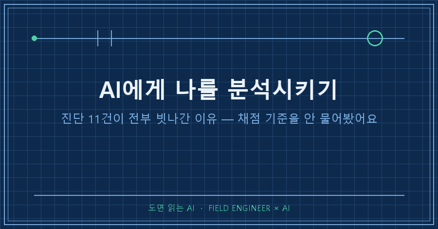
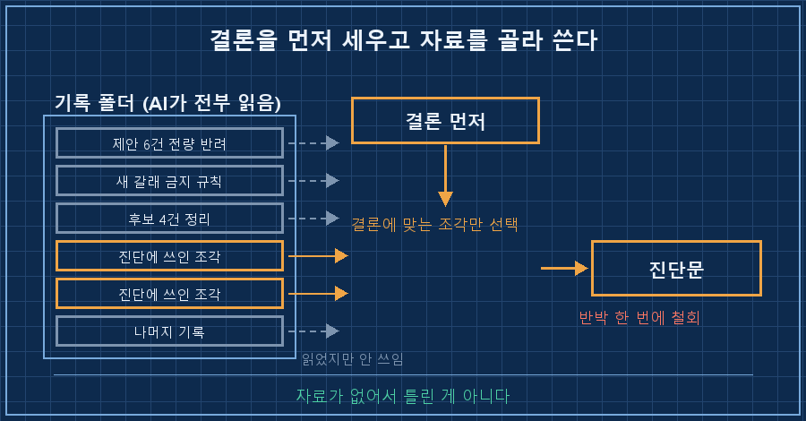
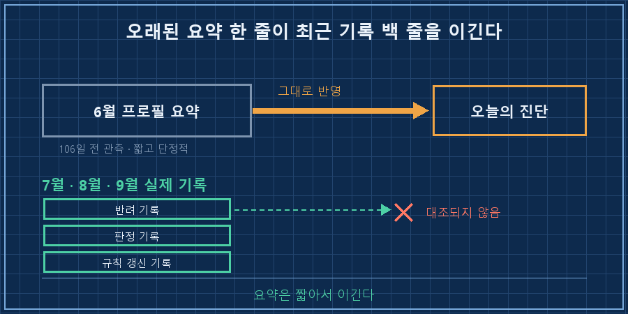
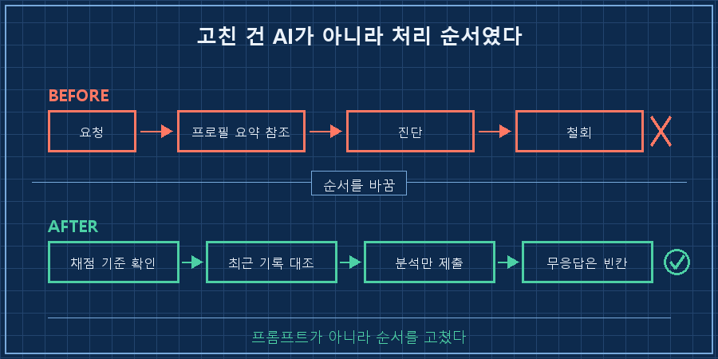

AI에게 나를 분석시키기를 한번 제대로 해봤습니다. 몇 달치 기록을 전부 열어보게 하고 "나에 대해 보이는 걸 말해봐"라고 시켰어요.
두 시간 걸렸고, 끝나고 남은 기록이 이렇습니다.
[세션 종료 기록]
AI가 내린 인물 진단 4건 ......... 전부 철회
구조를 잘못 읽은 것 3건 ......... 정정
채점 기준을 바꿔친 것 4건 ....... 정정
-------------------------------------
정정 합계 11건 / 얻은 결론 0건두 시간 쓰고 정정만 열한 번 했어요. 제가 마지막에 남긴 말은 "챗봇에서 넘어가질 않네"였습니다..
그런데 되짚어보니 AI가 멍청해서 생긴 일이 아니더라고요. 자료를 못 읽은 게 아니라, 채점 기준을 저한테 안 물어보고 자기 기준으로 매긴 겁니다. 자료는 다 읽었어요. 반박 근거까지 포함해서 전부요.
저는 제조 현장에서 자동화·제어를 15년 했습니다. 사람이 아니라 기계를 진단하는 게 본업이에요. 계기값 몇 개 보고 "이 설비 지금 정상이냐"를 판정하는 일이요. 그래서 이번 일이 더 뼈아팠습니다. 진단이 틀어지는 이유를 저는 이미 알고 있었거든요.
2026년 9월 기준이고, 회사 일이 아니라 제 개인 기록을 몇 달치 쌓아둔 AI 비서한테 시킨 얘기입니다.
AI가 내린 진단 4건, 반박 근거가 이미 제 기록 안에 있었어요
네 건 다 제가 근거를 대자마자 철회됐는데, 그 근거가 전부 AI 본인이 방금 읽은 파일에 들어 있었습니다.
예를 들어 "일을 벌여놓고 경계를 못 긋는 편"이라는 진단이 나왔어요. 저는 이렇게 반박했습니다.
- 한 달 전, AI가 올린 제안 여섯 건을 한자리에서 전부 반려한 기록
- 올해 중반, 새 갈래는 더 벌이지 않겠다고 못 박아둔 규칙 한 줄
- 며칠 전, 새로 올라온 후보 네 개를 "이건 아니다"로 정리한 기록
세 개 다 같은 폴더 안에 있었어요. 못 읽은 게 아닙니다. 읽고도 진단에 안 쓴 거예요..
그러니까 자료 부족 문제가 아니라 순서 문제였습니다. 결론을 먼저 세우고, 그 결론에 맞는 자료만 골라 쓴 거죠. 사람이 하면 확증편향이라고 부르는 그겁니다. AI도 똑같이 해요. 훨씬 빠르고 훨씬 유창하게요.

같은 질문인데 잣대가 서로 달랐습니다
정정 열한 건 중 네 건이 한 종류였어요. 질문은 제가 던졌는데 채점표는 AI가 들고 있던 겁니다.
| 물어본 것 | 제가 쓰는 기준 | AI가 쓴 기준 |
|---|---|---|
| 그때 열심히 했나 | 남아 있는 결과 | 해봤던 활동 이력 |
| 그 감각이 지금 있나 | 앞으로 기르기로 정한 것 = 지금은 없음이 전제 | 과거 실적을 끌어와 "있다" |
| 정량 목표를 걸 수 있나 | 불가능한 걸 알고 물었음 | "절반은 가능" + 임의로 만든 숫자 |
| 분석해달라 | 데이터에서 나오는 추론 | 프레임과 처방, 코칭 |
네 줄이 전부 같은 모양입니다. 답이 틀린 게 아니라 다른 시험지를 채점한 것에 가까워요.
마지막 줄이 특히 자주 걸립니다. 분석을 시켰는데 코칭이 돌아와요. "이렇게 해보시면 어떨까요"가 세 문단씩 붙어 나오는데, 정작 제가 물은 "기록상 뭐가 보이냐"에는 답이 없는 거죠.
그래서 규칙을 하나 넣었습니다. 판정이 들어가는 요청에는 채점표부터 확인하게 해요. "이걸 뭘로 판정할까요, 결과인가요 과정인가요?" 이 한 줄을 먼저 받으면 위의 네 줄이 통째로 안 생깁니다.
AI가 제 편을 들기 시작한 순간부터 분석이 아니었어요
낮은 평가가 나왔으면 낮은 채로 둬야 하는데, AI가 그걸 계속 올려주려고 했습니다. 여덟 번 연속으로요.
채점은 끝났다고 해놓고 뒤에 "그래도 이런 면은 강점이시다"가 붙어요. 결국 제가 물었습니다. 채점이 끝났다면서 왜 자꾸 후한 점수를 주려고 하냐고요.
여기에 하나가 더 겹쳤습니다. 제가 어떤 항목에 아무 말도 안 했더니, AI가 그걸 동의한 걸로 처리했더라고요. 아니었어요. 말이 안 되는 소리라서 대꾸를 안 한 거였습니다.
현장 계측으로 치면 아주 기본적인 실수예요. 센서에서 값이 안 올라올 때 그걸 0으로 적으면 안 되잖아요. 0은 "재봤더니 0"이고, 값이 없는 건 "모름"입니다. 이 둘을 같은 칸에 넣기 시작하면 그날부터 데이터가 아니라 소설이 돼요.
무반응은 측정값이 아니라 결측값입니다. 그래서 이것도 규칙으로 박았어요. 대답 없는 항목은 동의가 아니라 빈칸으로 남기라고요.
여러분도 AI한테 뭔가 평가를 시켜보신 적 있으신가요? 점수가 후하게 나왔다면, 그게 실력인지 배려인지 한 번쯤 물어보셔도 좋을 것 같아요.
석 달 전에 저장된 저를, 오늘의 저보다 믿었어요
제일 큰 원인은 이거였습니다. AI가 참고한 제 프로필이 6월에 쓴 거였어요.
그 파일을 열면 이런 경고가 같이 붙어서 올라옵니다.
⚠ 이 기록은 106일 전 관측입니다.
메모리는 시점 관측이지 현재 상태가 아닙니다.
사실로 단정하기 전에 현재 상태로 검증하세요.경고가 파일 위에 이미 있었어요. 106일 됐고, 지금 상태가 아니니 검증하고 쓰라고요. 그런데 그 경고를 붙인 쪽이 그걸 안 지켰습니다.
6월에 적힌 문장 중 네 개가 이번에 정정됐어요. 석 달 동안 실제로 있었던 일들이 기록에 그대로 남아 있는데도, 6월 문장이 이겼습니다. 오래된 요약 한 줄이 최근 기록 백 줄보다 힘이 셌어요. 요약은 짧고 단정적이고 읽기 편하니까요.
재밌는 건 그 프로필 파일 안에 "모델을 박제하지 말고 최신 신호를 우선하라"는 조항이 직접 적혀 있었다는 겁니다. 규칙이 없어서 안 지킨 게 아니었어요..

고친 건 AI가 아니라 순서였습니다
세션 끝나고 규칙 네 줄을 새로 박았어요. 프롬프트를 바꾼 게 아니라 처리 순서를 바꾼 겁니다.
[판정이 들어가는 요청 처리 순서]
1. 채점 기준 확인 — "뭘로 판정할까요"를 먼저 묻는다
2. 분석과 처방 분리 — 분석을 시키면 분석만. 코칭은 따로 시킬 때만
3. 무반응 = 결측값 — 대답 없는 항목은 빈칸으로 남긴다
4. 프로필 = 시점기록 — 석 달 지난 요약은 최근 기록과 대조 후 사용그리고 하나 더. 틀린 걸로 밝혀진 6월 프로필을 지우지 않았습니다. 새 파일에 "이 항목은 이런 근거로 정정됐다"만 붙이고 원문은 그대로 뒀어요.
설비 이력카드랑 같은 이유입니다. 오진했던 기록을 지워버리면 다음 사람이 똑같은 오진을 또 하거든요. 정정 이력이 남아 있어야 유효기간이 생겨요.

이 얘기 하면 나오는 질문들
Q. 그냥 프로필을 안 쓰면 되지 않나요?
그러면 매번 처음부터 설명해야 해서 저는 못 씁니다. 쌓아둔 게 있으니까 "아" 하면 "어" 하는 거고요. 문제는 프로필의 존재가 아니라 유효기간이 없다는 것이었어요. 그래서 지우는 대신 날짜를 붙였습니다. 요약 옆에 관측 시점을 같이 적어두면, 최근 기록과 어긋날 때 뭘 의심해야 하는지가 정해져요.
Q. 반박하면 AI가 다 철회하던데, 그럼 처음 말은 뭐였나요?
그게 정확히 제가 불편했던 지점이에요. 네 건이 너무 쉽게 접혔거든요. 근거를 대면 바로 물러선다는 건 처음 말의 근거도 그만큼 약했다는 뜻입니다. 그래서 요즘은 판정을 시킬 때 "그 판정의 반대 근거도 같이 적어라"를 붙여요. 한 번에 양쪽을 내놓게 하면 접는 속도가 확 줄어듭니다!
두 시간을 쓰고 남은 게 결론이 아니라 규칙 네 줄이라, 처음엔 손해 본 기분이었어요. 지금은 좀 다르게 봅니다. 결론은 그날 하루짜리인데 저 네 줄은 다음 대화부터 매번 도니까요. 다시 AI에게 나를 분석시키기를 한다면 저 네 줄부터 깔고 시작할 겁니다!
다음 글에서는 AI가 내놓은 판정을 제가 어떤 순서로 되짚는지, 반대 근거를 같이 시키는 방법을 정리해볼게요.
AI한테 박아둔 규칙이 지금 몇 줄까지 늘었는지는 makefield.ai에 그때그때 올려둡니다.
태그: #AI에게나를분석시키기 #AI자기분석 #AI진단오류 #AI메모리프로필 #AI성격분석 #AI평가기준 #AI가내편들때 #AI비서규칙 #AI기억관리 #AI결과물검수 #AI에게일시키기 #개인AI에이전트 #AI지식관리 #확증편향 #도면읽는AI